Quarry and the Extractive Industries
Why use Keith Foran?
Keith has a background in quarries and the extractive industries, he graduated from Athlone with a Diploma in Mineral Engineering and Leeds University (Doncaster ) with a degree in Quarry and Road Surface Engineering. Keith worked in quarries in the UK and Ireland in management positions and as an Explosives Engineer, before going to the Health and Safety Authority where he was a Quarry Inspector. Keith is a member of the Institute of Explosive Engineers and in the past audited and trained shotfirers in relation to the QSCS training program. Keith has audited and provided advise to sand and gravel, cement plants, hard rock quarrying and dredging operations at home in Europe and Worldwide.
- Quarry Safety Statement and Procedures
- Quarry Risk Assessments
- Managers Rules
- Shotfiring Rules
- Blasting and Explosive Safety Advice
- Audit and Gap Analysis Studies
- Accident investigation and RCA
- Safety Inspection and Action plans
- Safety Advisor Services
- Quarry Vehicle Brake Testing
- Dust - inhalable & respirable dust
- Occupational Noise Survey and Assessments
- Hearing Protection Selection Assessment
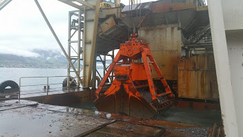
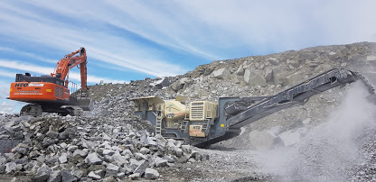
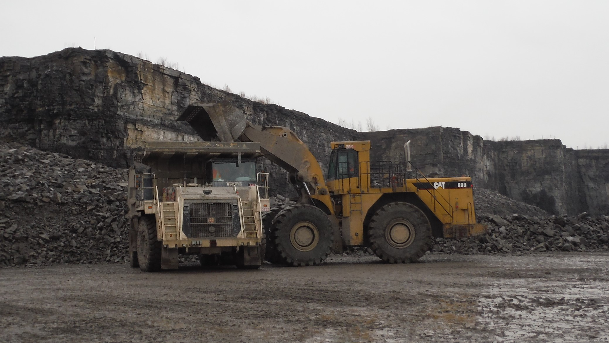
 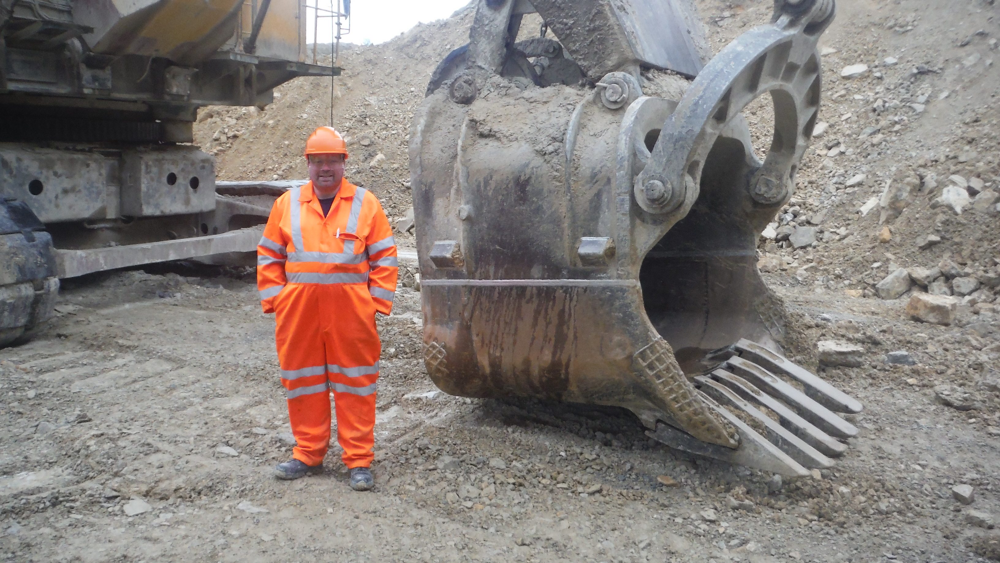
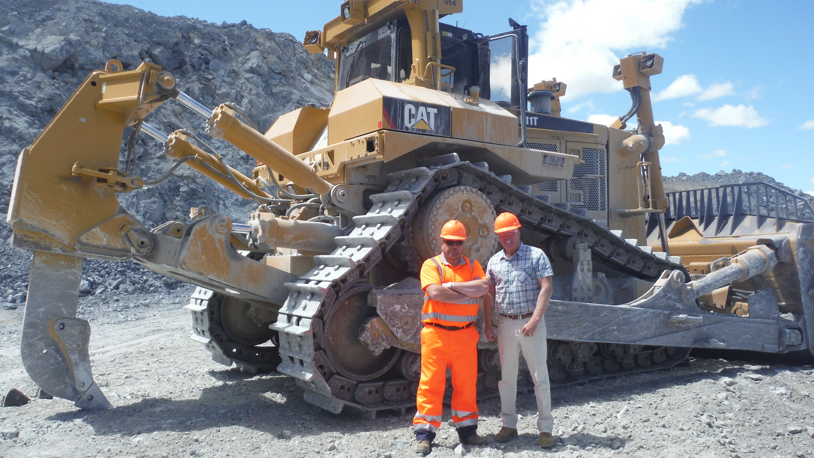
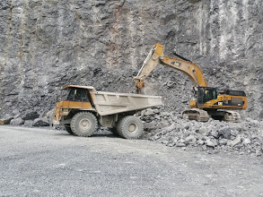
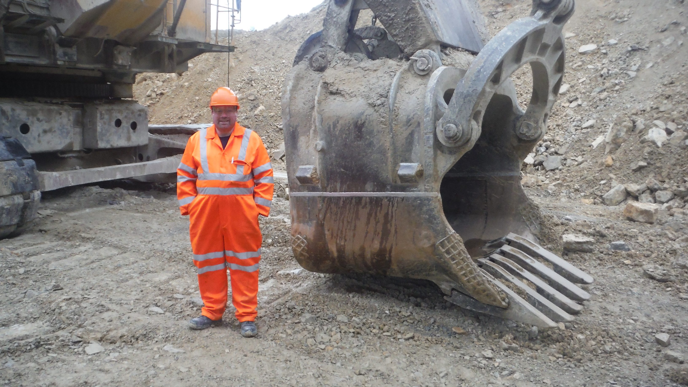
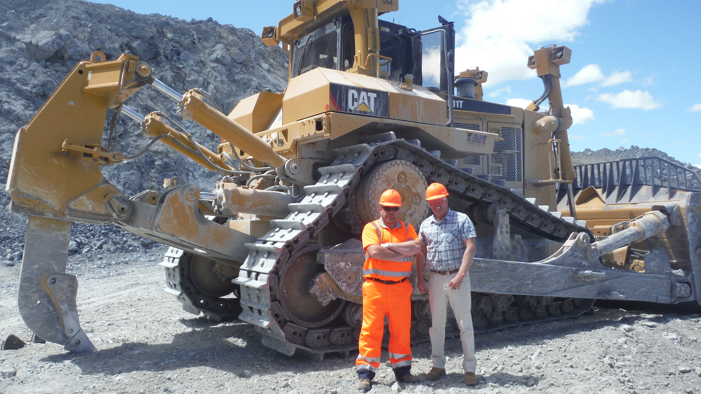
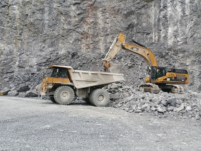
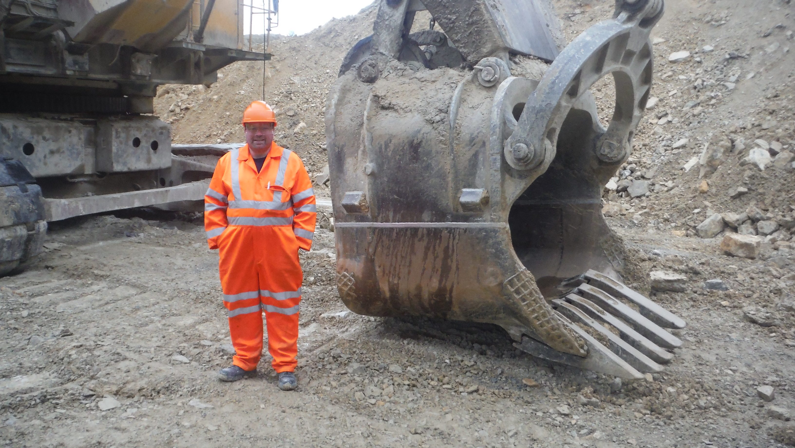
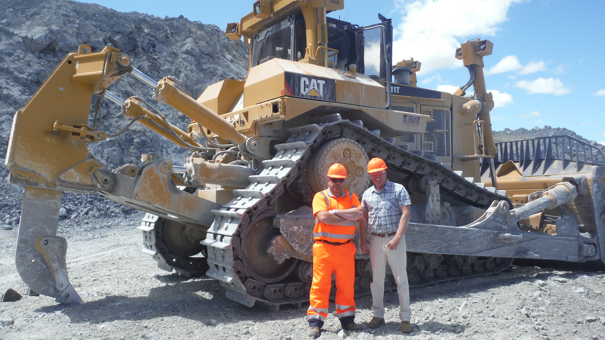
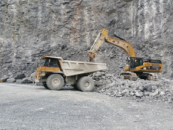